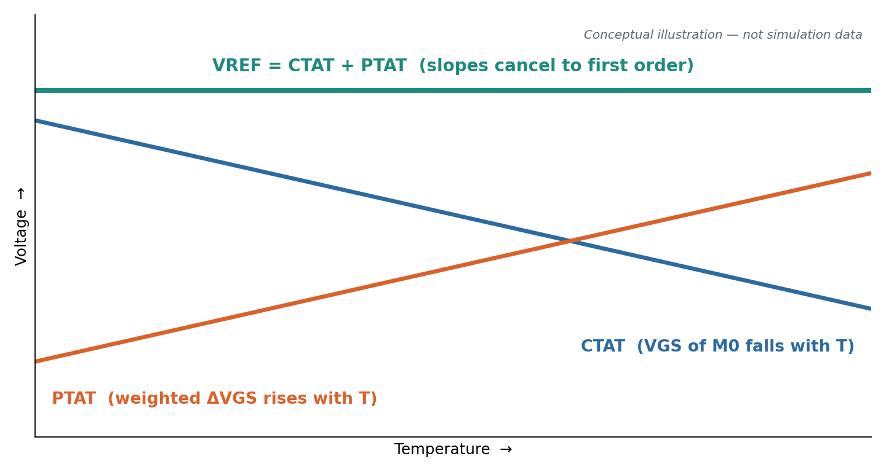
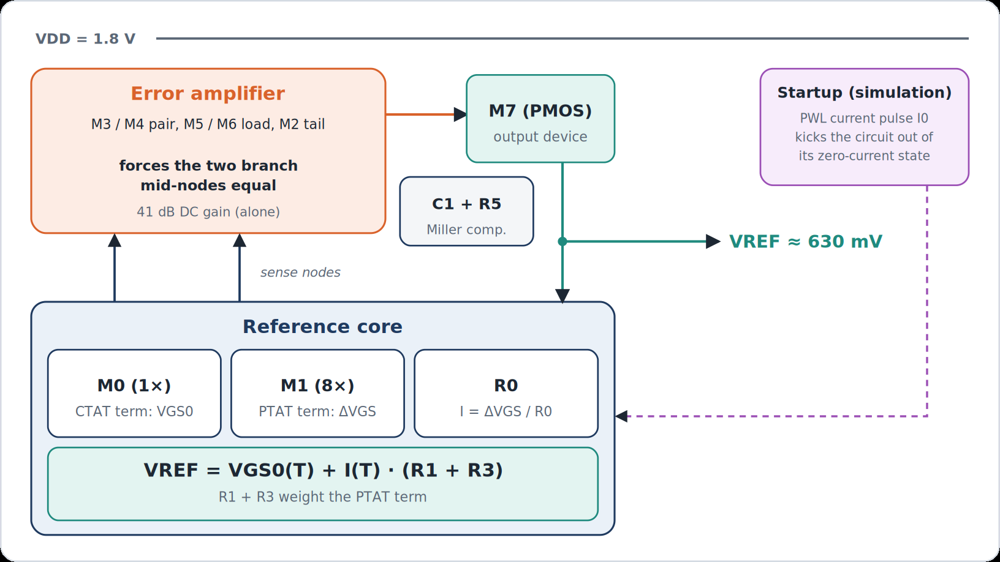
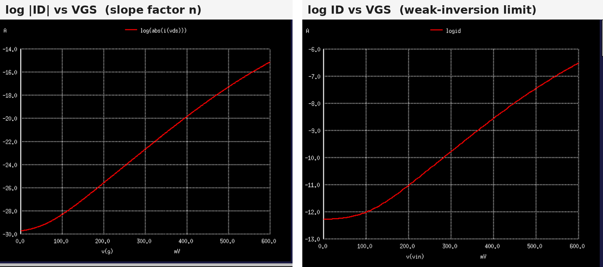
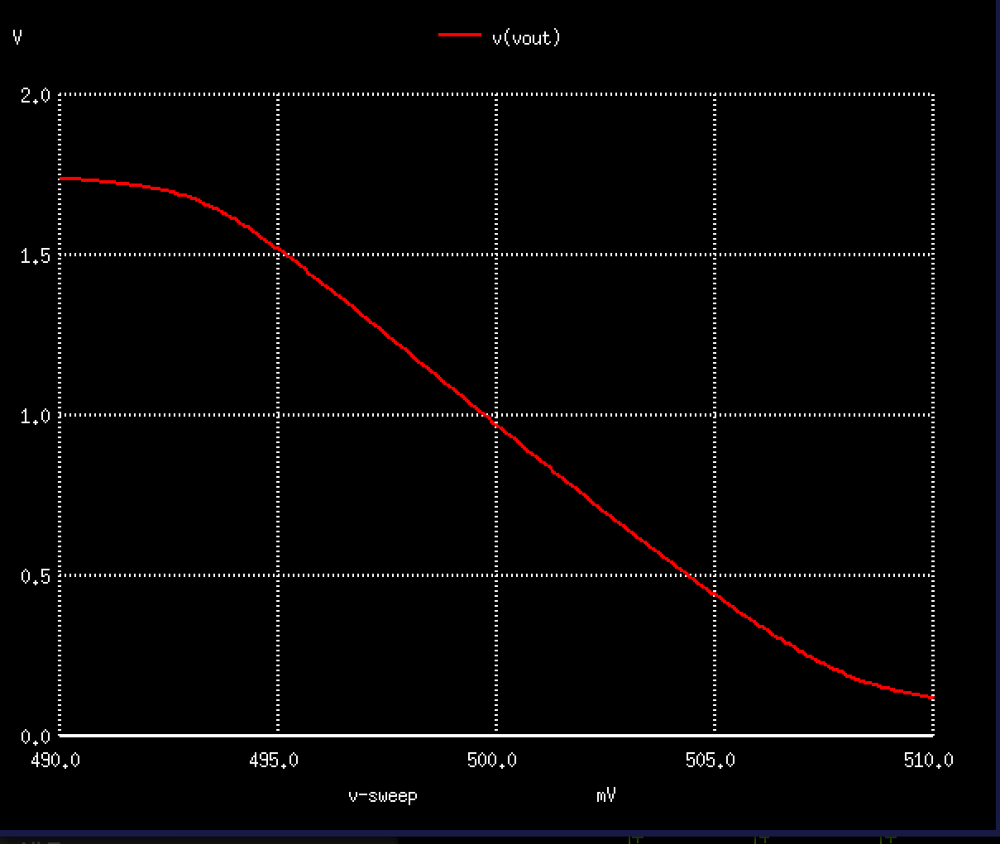
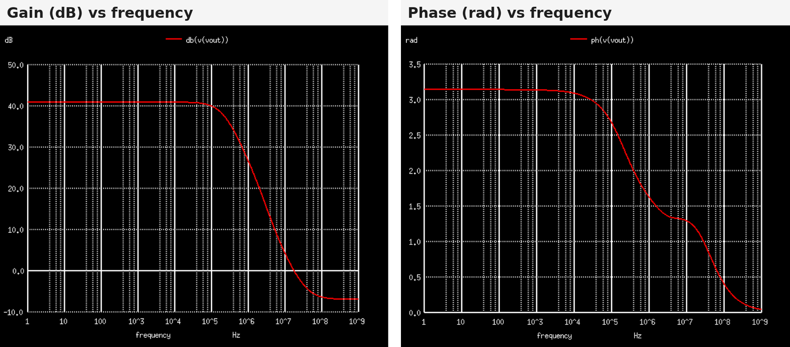
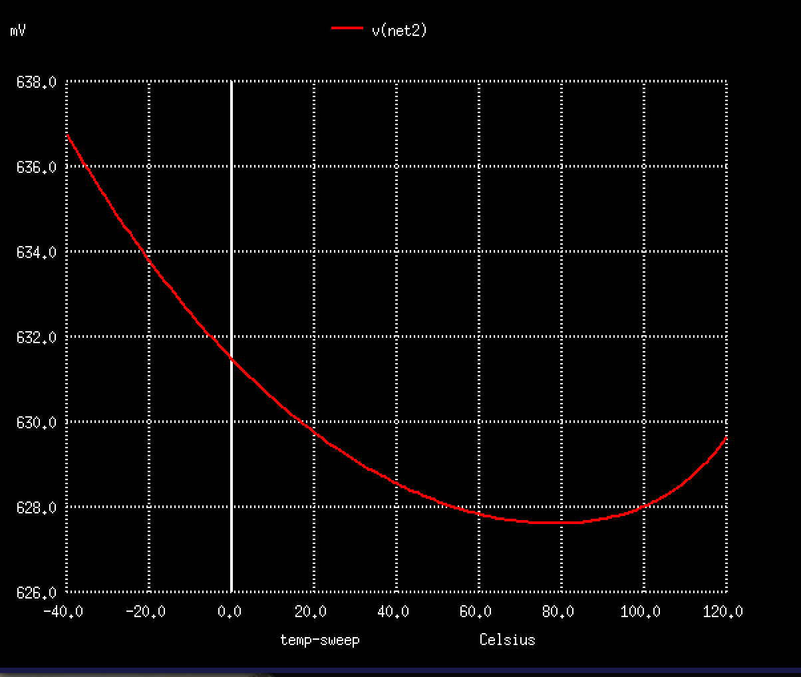
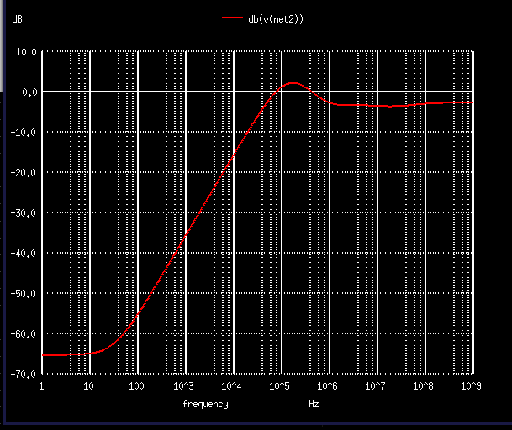
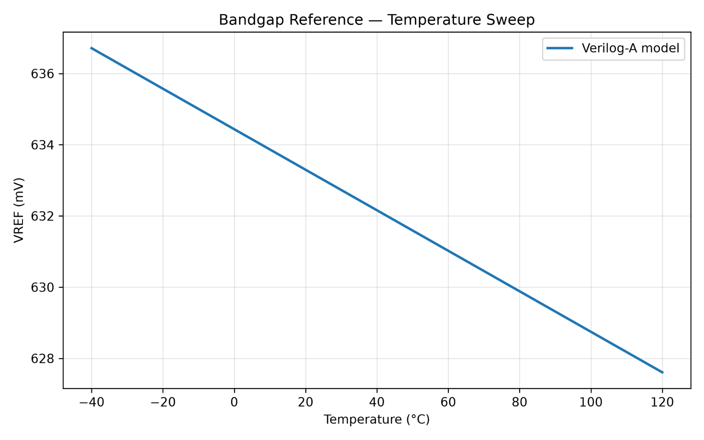
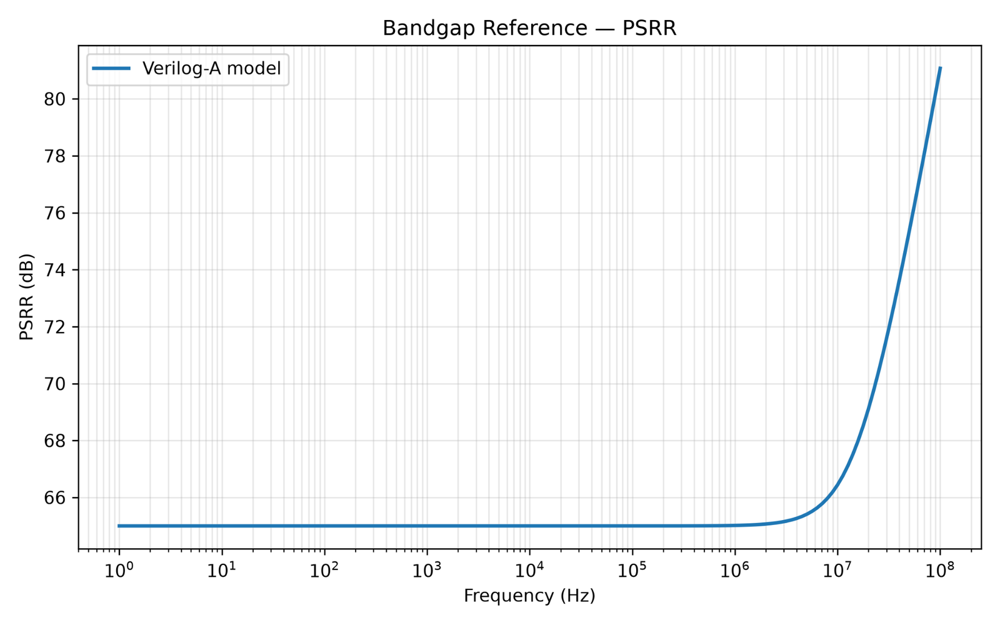
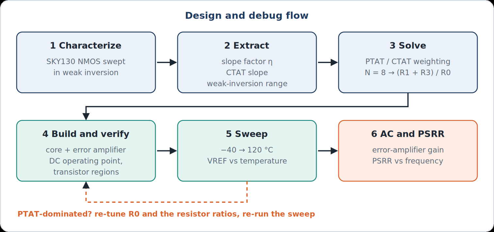

Problem
Every analog block on a chip needs a voltage that does not move when the temperature or the supply does. We set out to build that reference from a MOSFET-only subthreshold topology, so the design does not depend on process-specific bipolar devices and the method can be repeated in other CMOS processes.
The reference runs from a 1.8 V supply, targets more than 40 dB of PSRR, and is characterized from −40 °C to 120 °C in SKY130. It is one block of a larger mixed-signal Tiny Tapeout design.
Circuit architecture
How the reference works
In weak inversion a MOSFET's drain current depends exponentially on its gate-source voltage, the same way a BJT's current depends on VBE. Two devices of different size carrying the same current therefore differ in VGS by a voltage that is proportional to absolute temperature (PTAT). A single VGS, meanwhile, falls with temperature (CTAT). Adding a weighted PTAT term to the CTAT term flattens the output.
I = ΔVGS / R0
VREF = VGS0(T) + I(T) · (R1 + R3)

How the circuit closes the loop
- Two branches hang from the VREF node. The left branch is R3, R1, R0 and M0. The right branch is R4, R2 and M1, where M1 is eight times the size of M0.
- The error amplifier compares the mid-nodes of the two branches (the R3/R1 and R4/R2 junctions). Because R3 = R4, forcing those nodes equal forces the two branch currents equal.
- The amplifier's output drives PMOS M7, which supplies both branches from VDD. VREF is M7's drain.
- With equal currents, M0 and M1 differ in VGS by ΔVGS. R0 turns that into the PTAT current, and R1 + R3 turn the current back into a voltage that adds to VGS0.
- A 1 pF capacitor (C1) in series with a 10 kΩ resistor (R5) links the amplifier output to VREF for Miller compensation.
- The circuit has a zero-current state, so in simulation a PWL current source (I0) injects 100 nA into the M0/M2 gate node for the first 5 µs and then ramps to zero.

| Component | Role | Value / size (m × W/L, µm) |
|---|---|---|
| M0 | Core device, sets the CTAT voltage | nfet_01v8, 1 × 20/1 |
| M1 | Core device, 8× M0, creates ΔVGS | nfet_01v8, 8 × 20/1 |
| M2 | Amplifier tail current source | nfet_01v8, 1 × 5/1 |
| M3, M4 | Amplifier input pair | nfet_01v8, 1 × 5/1 each |
| M5, M6 | Amplifier current-mirror load | pfet_01v8, 1 × 15/1 each |
| M7 | Output device | pfet_01v8, 1 × 1/1 |
| R0 | Sets the PTAT current | 530 kΩ |
| R1, R3, R4 | Scale the PTAT current into a voltage; R3 = R4 matches the branches | 945 kΩ each |
| R2 | Right-branch resistor | 55 kΩ |
| C1, R5 | Miller compensation | 1 pF, 10 kΩ |
SKY130 device characterization
We measured the SKY130 devices before sizing anything, instead of reusing constants from the original reference design. Sweeps of the 1.8 V NMOS (nfet_01v8) gave three numbers the design equations depend on:
- Subthreshold slope factor: η ≈ 1.48, from the slope of the log-current curve.
- CTAT slope: ∂VGS/∂T ≈ −0.63 mV/°C, from a temperature sweep of VGS at fixed bias (about 695 mV at −20 °C and 632 mV at 80 °C).
- Weak-inversion limit: for a unit-size device (W/L = 1/1) the log-current curve stays straight up to roughly 3 nA. Above that the device leaves weak inversion, the exponential model stops holding, and the PTAT equations lose accuracy. The limit scales with W/L.

nfet_01v8. Left: slope-factor extraction. Right: the straight, exponential region and where it ends for a unit-size device.Error amplifier
The amplifier is a five-transistor differential stage: NMOS input pair M3/M4, PMOS current-mirror load M5/M6 and NMOS tail source M2. We designed and verified it on its own testbench before connecting it to the core.
Hand calculation
- Identify the nodes: the inputs are the gates of M3 and M4, and the output is the drain of M6, which drives the gate of M7.
- Pick a design point of 1.8 V supply, about 10 µA of tail current and roughly 150 mV of overdrive, so each side carries 5 µA and gm = 2ID/Vov ≈ 67 µS.
- Start with L = 1 µm and estimate gain from Av ≈ gmro, aiming for 40 to 60 dB.
- Check that every device stays in saturation, then move to simulation.
DC bring-up
The first operating-point run showed the tail source M2 in triode, with almost no drain-source voltage across it. Lowering its bias voltage moved it into saturation, and every device in the amplifier then passed the region check.
| Device | VDS | VDS,sat | Region |
|---|---|---|---|
| M2, first bias | ≈ 3 mV | ≈ 112 mV | Triode (fails) |
| M2, VBIAS = 0.5 V | ≈ 69 mV | ≈ 41 mV | Saturation |
| M3, M4 | ≈ 0.95 V | ≈ 40 mV | Saturation |
| M5, M6 | ≈ 0.78 V | ≈ 43 mV | Saturation |
Gain and bandwidth
A DC sweep of one input around 500 mV moved the output from about 1.7 V down to about 0.1 V, a slope near −105 V/V, or about 40 dB. The AC response confirmed it:
- 41 dB low-frequency gain;
- first dominant pole around 200–500 kHz;
- unity-gain frequency on the order of 10 MHz, with a second pole further out.


The standalone testbench biases M2 from a DC source. In the full reference, M2 shares its gate node with core device M0, so the amplifier is biased by the core. Measuring loop gain and phase margin in the full circuit is the next step for the compensation work below.
Integration and debugging
Putting the core and the amplifier together did not work the first time. The log below is how the design converged.
| What we saw | What we did | Outcome |
|---|---|---|
| First combined temperature sweep: VREF rose with temperature, so the PTAT term was too strong. | Increased R0 to weaken the PTAT term. | Almost no change in slope. |
| The resistor change was not enough, which pointed at the topology and the constants. | Temporarily removed output device M7 to isolate the loop, and recalculated the resistors from the SKY130 values we had measured rather than the original design's process constants. | Total variation came down to 12.4 mV in an intermediate iteration. |
| Swept R0 and compared curves: low R0 gave a rising curve, high R0 a falling one. | Tuned the resistor ratio toward the crossover between the two. | Final variation of about 9 mV over −40 to 120 °C. |
| Amplifier tail source M2 sat in triode on its standalone testbench. | Lowered its bias voltage and re-checked every region. | All amplifier devices in saturation. |
| Supply-to-output response peaks near 100 kHz. | Compared the amplifier's AC response with the peak to relate it to loop bandwidth and compensation. | Open, and the main item in Next steps. |
Results
All results are pre-layout ngspice simulations of the schematic above.
Temperature stability
VREF sits near 630 mV. Over −40 °C to 120 °C it moves about 9 mV peak to peak, from 636.7 mV at −40 °C down to a minimum of 627.6 mV near 80 °C and back up to about 630 mV at 120 °C. By the box method that is an effective temperature coefficient of about 89 ppm/°C:
The curve is a shallow bowl rather than a straight line. First-order cancellation removed the linear drift, and the second-order curvature that remains is what sets the 9 mV.

Power-supply rejection
At low frequency the supply-to-output transfer is about −65 dB, so PSRR ≈ 65 dB at 1–10 Hz, above the 40 dB target. Rejection then falls steadily as frequency rises: the target is met only over roughly the first few hundred hertz, the response reaches 0 dB near 100 kHz, peaks about +2 dB around 100–150 kHz, and settles near −3 dB above about 1 MHz.
Peaking like this usually points to limited phase margin in the feedback loop, so the amplifier's bandwidth and the C1/R5 compensation are the levers for improving it.

| Metric | Result | Conditions |
|---|---|---|
| Nominal VREF | ≈ 630 mV | Transistor level, 1.8 V supply |
| VREF variation | ≈ 9 mV peak to peak | −40 °C to 120 °C |
| Temperature coefficient | ≈ 89 ppm/°C | Box method |
| Low-frequency PSRR | ≈ 65 dB | 1–10 Hz |
| PSRR peaking | ≈ +2 dB | Near 100–150 kHz |
| Error-amplifier gain | ≈ 41 dB | Standalone testbench |
| Error-amplifier unity-gain frequency | order of 10 MHz | Standalone testbench |
| Verilog-A VREF | 632.9 mV | 27 °C, behavioral model |
Behavioral Verilog-A model
Mehak led a behavioral Verilog-A model of the reference so the rest of the Tiny Tapeout design can be simulated at system level without the full transistor netlist. It has parameters for nominal VREF, temperature coefficient, supply sensitivity, output resistance and capacitance, and noise. It is compiled with OpenVAF and simulated in ngspice.
Parameterized from the transistor-level results, it gives VREF = 632.9 mV at 27 °C and about 65 dB of PSRR.


The model is deliberately first order. It has no temperature curvature and no PSRR peaking, and those are exactly the behaviors the transistor-level circuit shows. That gap is why the transistor results above matter.
Design methodology
We sized the reference from SKY130 characterization instead of values taken from the original design. That makes the method repeatable: swap the PDK, re-run the device sweeps, and re-derive the weighting.

Next steps
- Measure loop gain and phase margin in the full circuit, then tune the amplifier bias and the C1/R5 network to reduce the PSRR peak near 100–150 kHz.
- Run process, voltage and temperature corners, plus Monte Carlo, to see how far the 9 mV and 65 dB results move.
- Replace the simulation-only startup current source with a transistor-level startup circuit and verify start-up across supply ramps.
- Lay out the block and re-check temperature and PSRR with extracted parasitics.